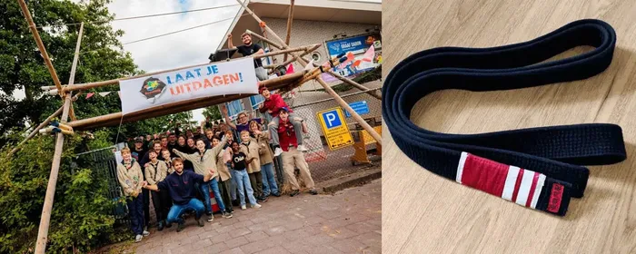

Plekhouder
Schoolproject
Nog niet ingevuld. Hier komt een project van school: wat ik maakte, met welke technieken en wat mijn rol was.
Software developer in opleiding, mbo niveau 4
Welkom op mijn cv-site. Ik ben Desmond, ik woon in Alkmaar en studeer Software Development aan het Nova College. Ik heb een lang lontje en blijf rustig in stressvolle situaties. Ik hoor graag van u.
Jeroen en Wouter, docenten aan het Nova College. Hun contactgegevens stuur ik u graag op aanvraag.
Liever een document om te printen of door te sturen? Download mijn cv als pdf.
Hier komen mijn school-, stage- en eigen projecten zodra ze af zijn. De kaarten hieronder zijn nog plekhouders.
Plekhouder
Nog niet ingevuld. Hier komt een project van school: wat ik maakte, met welke technieken en wat mijn rol was.
Plekhouder
Nog niet ingevuld. Hier komt een project dat ik zelf heb gemaakt, met een link naar de code.
Plekhouder
Nog niet ingevuld. Mijn stage moet nog beginnen; daarna staat hier waar ik heb gewerkt, wanneer, en wat ik heb gedaan.
Ik teken vooral anime, auto's en dieren, maar ook andere onderwerpen als ik er zin in heb. Ik heb een tekentablet, maar werk liever op papier, daar zit meer gevoel in. Mijn tekeningen deel ik niet online, maar u mag vragen of u ze kunt zien.
Ik ga graag naar festivals, het liefst house en techno, maar ik luister eigenlijk alles: rock, metal, rap. Volgens mij bestaat er goede en slechte muziek, geen goede en slechte genres. Ik regel ook regelmatig zelf een uitje voor mijn vrienden en mij.
Ik game graag op de pc, vooral survivalgames zoals Minecraft, RimWorld en Terraria. Bouwen vind ik het leukste onderdeel. Ik speel casual, soms alleen om te ontspannen, soms met vrienden. Later wil ik weleens een eigen game maken, wat mooi aansluit bij software development.

Sinds mijn dertiende ben ik actief bij de scouting. Daar heb ik geleerd samen te werken, verantwoordelijkheid te nemen en kampen en activiteiten te organiseren. Dat heeft mijn organisatievermogen en teamgevoel flink versterkt.
Ik doe al sinds mijn zevende aan jiu jitsu. Het vraagt discipline, doorzettingsvermogen en probleemoplossend denken: je moet steeds strategisch reageren op je tegenstander. En het houdt me fit.